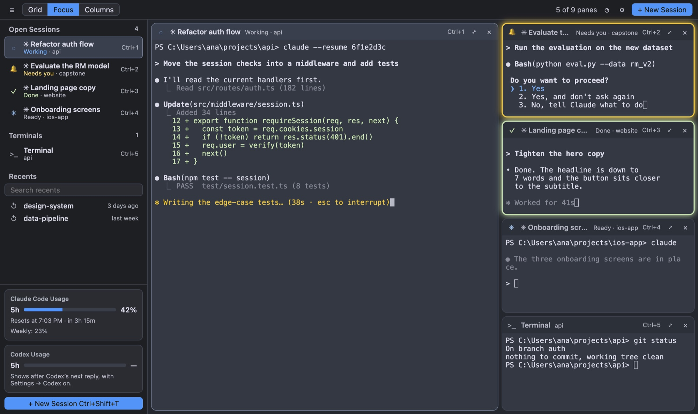

Mosaico
Mosaico
A terminal for running several coding agents at once
Claude Code and Codex side by side, each pane showing what its agent is doing
Paste this in Terminal. It puts Mosaico in Applications and opens it.
curl -fsSL https://alexchequer.github.io/mosaico-releases/install.sh | bash
Paste this in PowerShell. It installs Mosaico for your user and opens it.
irm https://alexchequer.github.io/mosaico-releases/install.ps1 | iex

Grid, Focus and Columns
Up to nine panes that rearrange themselves as you open and close sessions. Switch at any time; nothing restarts.
- ⌘1–⌘9Ctrl+1–Ctrl+9 jump to a pane
- ⇧⌘NCtrl+Shift+N goes to the next one that needs you
- ⇧⌘↩Ctrl+Shift+Enter puts the focused pane in the big spot

Each agent tells Mosaico what it's doing
Claude Code and Codex announce every step through their hooks. Mosaico turns each event into the pane's state the moment it happens, without reading the screen or guessing.
Sessions you open in Mosaico report on their own. For a claude you type yourself, or for Codex, Mosaico asks before adding its entry to the agent's settings.
SessionStartReadyUserPromptSubmitWorkingPreToolUse · EditWorkingPermissionRequest · BashNeeds youPostToolUse · BashWorkingStopDone- Esc, then a new promptReady
Notifications only when a session needs you or finishes
- They come only while you're in another app
- Click one and Mosaico opens on that pane
- Click one to go back to Mosaico
- Answer Claude right from the notification
- The Dock icon shows how many sessions are waiting
- The taskbar button flashes, and the window's title shows how many are waiting
See how much of your plan is left
The 5-hour window and the week, for each agent, in the corner of the sidebar. Mosaico reads them from the agents themselves: Claude Code's status line and Codex's session file. From 80% the number turns yellow.
The app's 23 themes, on this page
Pick one and the page changes to it. Mosaico has the same ones, dark and light.
Back where you left off
Close Mosaico and open it again: each pane returns in its folder and its conversation.
Claude Code and Codex
Start either one from New Session. A claude or codex you type in a plain terminal is recognized too.
CPU and memory per pane
See which session is busy and how much memory each one takes.
Prefer to download the file?
The command at the top is the quickest way. Mosaico isn't signed by Apple or Microsoft yet, so a file downloaded in the browser has to be allowed the first time you open it. You can read what the command runs: install.sh and install.ps1.
After downloading
- Unzip it and drag Mosaico to Applications.
- Open it. macOS says it can't check the app; click Done.
- Go to System Settings → Privacy & Security, scroll down and click Open Anyway.
- On macOS 14, Control-click Mosaico in Applications and choose Open instead.
After downloading
- Open Mosaico-Windows-Setup.exe.
- On “Windows protected your PC”, click More info, then Run anyway.
- Mosaico installs for your user only and goes in the Start menu.
Mosaico asks before touching your agents' settings
It keeps a backup first, and Settings has a Remove button that puts everything back.
Nothing leaves your computer
Mosaico has no account and stays offline. The one exception is yours to turn on: a check that asks GitHub for the number of the latest version. Its logs stay on your computer and hold event names and sizes, never your prompts, code or answers.
The code is open, so you can check this yourself: read it on GitHub.